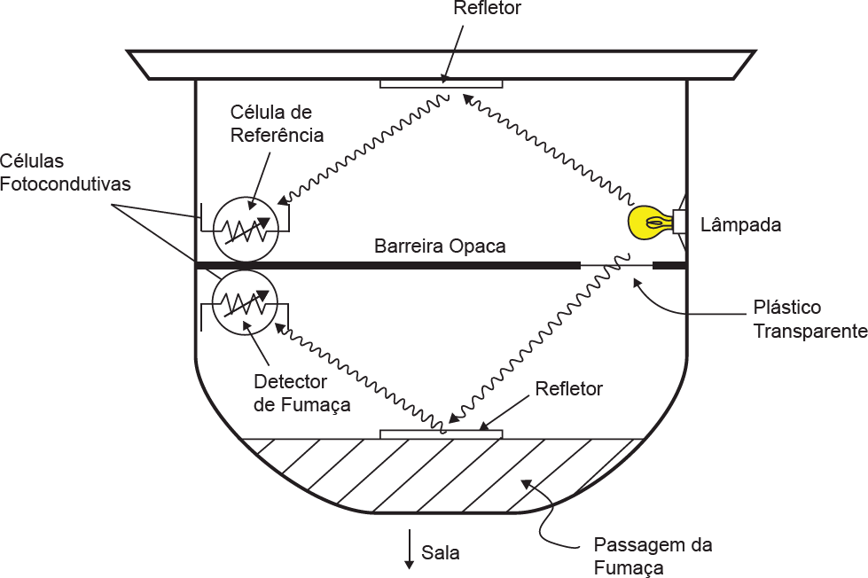
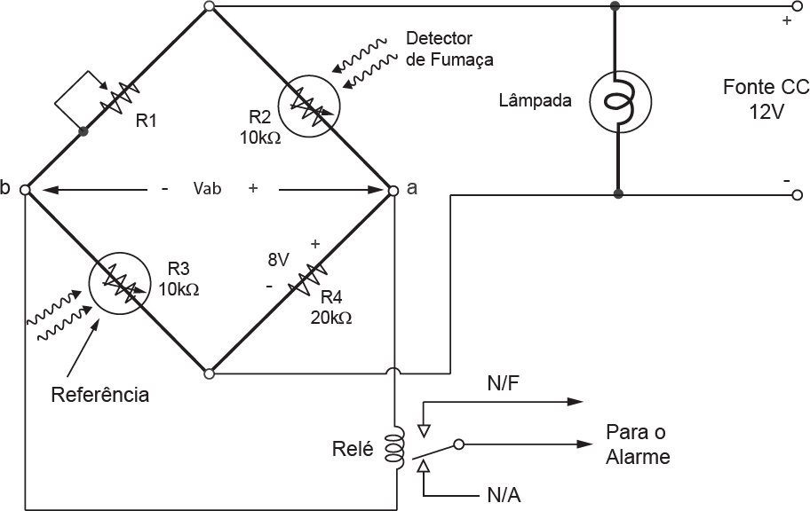

Um detector de fumaça é uma câmara formada por dois compartimentos nos quais são inseridas duas células fotocondutoras, que são elementos cuja resistência varia com a luminosidade, e uma fonte de luz, conforme ilustra a figura I. Em condições normais, os raios de luz provenientes da fonte atingem as duas células igualmente. Na ocorrência de um incêndio, apenas a câmara inferior será preenchida pela fumaça e, assim, a luminosidade na célula será alterada, causando mudança na sua resistência.
Figura I - Esquemático do detector de fumaça
BOYLESTAD, R. L. Introdução à Análise de Circuitos, 10 ed. Pearson Prentice Hall, 2004.
O circuito do detector de fumaça é mostrado na figura II, no qual existe uma ponte de Wheatstone. Em condições normais, as resistências das duas células são iguais e o circuito está equilibrado, de modo que a tensão Vab é nula. Na presença de fumaça, as resistências das células fotocondutivas tornam-se diferentes e, assim, surge uma diferença de potencial entre os pontos a e b. Se essa tensão for maior que um valor préestabelecido, um relé será acionado, o que por sua vez, disparará um alarme.
Figura II - Circuito do detector de fumaça
BOYLESTAD, R. L. Introdução à Análise de Circuitos, 10 ed. Pearson Prentice Hall, 2004 (adaptado).
Considerando o circuito e os dados da figura II, em que valor deverá ser ajustada a resistência variável Ri para que, em condições normais, a tensão Vab seja nula?